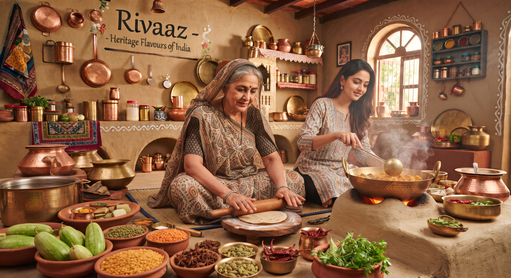

Home-made Indian street food, namkeen and bakes, served in small batches and made with care.
Home-made · Small batches · Saggart, Dublin 24From our kitchen
Tap a favourite to see the full menu.
Street food
Ragda Pattice, Panipuri, Paav Bhaji and Paratha, made fresh to order.
Namkeen
Nine crunchy savoury snacks, from Bhavnagari Sev to Chakli, kept airtight so they stay crisp.
Bakes & sweets
Eggless cake, muffin cakes, cookies, donuts and traditional Indian sweets.
- Fresh, small batches
- HSE-registered kitchen
- Level 2 certified chef
Enjoyed your Rivaaz order?
A quick Google review helps other families find us. Thank you!
Leave a Google reviewOur promise
Home-made
Every dish is prepared by hand in our own kitchen.
Small batches
We serve small quantities so everything tastes fresh.
Honest allergens
Every dish is labelled, and you can filter the menu by allergen.
Our story
Rivaaz means tradition: the customs and flavours that make a meal feel like home.

Long before the meticulous menus and the professional kitchen, the journey began with a simple, irresistible pull toward the hearth. As a child, the kitchen wasn’t just a room; it was a sanctuary of scent and sound, where small, eager hands first learned the magic of transforming humble ingredients into something extraordinary. For this chef, a lifelong, unapologetic foodie, every simmering pot and perfectly toasted spice was a playground of flavor.
Those early years were spent entirely in the service of loved ones. Cooking was never merely a task, but a quiet language of affection poured into every dish prepared for bustling family gatherings and crowded tables of friends. Watching a face light up after that very first bite became a profound, addictive thrill. It cemented a simple, enduring philosophy that remains the heartbeat of the kitchen today: the purest, most beautiful way to share joy in this world is through food. Every recipe tells a story of home, and every meal served is an open invitation to sit down, belong, and celebrate the simple pleasures of life together.
Made by hand
Small batches, served fresh and packed with care.
Properly registered
A home-based food business registered with the HSE.
Trained chef
Everything is prepared by a chef who holds a Level 2 Food Safety certification.
Allergens & food safety
Please read this before you order. If you have any allergy or intolerance, tell us and we’ll confirm the ingredients for your batch.
“Varies” means the recipe changes from batch to batch. Ask us about the spice mix in Tikha Sev, as it can contain mustard or sesame.
We use gluten (wheat), peanuts, tree nuts and sesame in our kitchen, and all dishes may contain traces of dairy products, so we cannot guarantee that any dish is completely free of traces.
How we keep food safe
Safe temperatures
Hot dishes reach at least 75°C and are kept at 63°C or above until served.
Checked and recorded
Temperatures are logged, and our probe thermometers are calibrated every week.
Kept clean
Food-safe sanitisers, separate kitchen working time, and no pets or visitors while we prepare orders.
Registered
A registered home food business, registered with the HSE.
Place an order
Choose your dishes above and your list appears here. Fill in the blanks, then send it to us by WhatsApp or email, or copy it.
Or call or text +353 89 954 8998 · hello.rivaazkitchen@gmail.com
Based in Saggart, Dublin 24. We’ll confirm collection or delivery details when you order.
Call or text
+353 89 954 8998
hello.rivaazkitchen@gmail.com
Find us
Saggart, Dublin 24
Review us
Leave a Google review ★